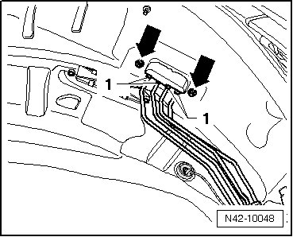
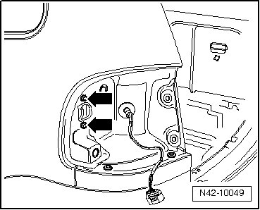
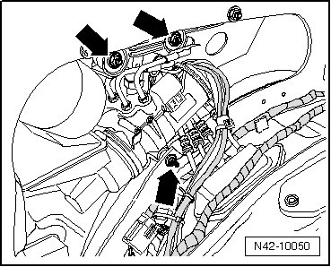
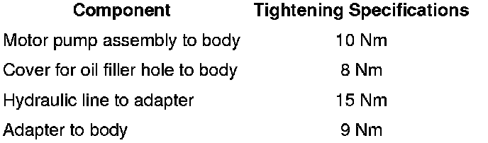

Separable Stabilizer Bar Motor Pump
Separable Stabilizer Bar Motor Pump
Special tools, testers and auxiliary items required
• Torque wrench (VAG 1331)
• Vehicle diagnostic, test and information system (VAS 5051)
Removing
- Depressurize hydraulic system using the vehicle, diagnosis, testing and information system (VAS 5051).
- Remove left rear wheel housing liner.
- Remove hydraulic lines - 1 - and mounting nuts - arrows -.

- Removing left rear tail light.
- Remove adapter from body, remove bolts - arrows - to do so.

- Remove left side C-pillar trim.
- Remove roof end strip..
- Remove D-pillar trim..
- Remove rear lock carrier cover.
- Remove storage area floor.
- Remove rear left backrest.
- Remove left side rear panel trim.
With Auxiliary Heating and Air Conditioning
- Remove auxiliary heating and Air conditioning (A/C) unit. Refer to --> Heating, Ventilation and Air Conditioning 87 Removal and Installation.
Continuation for All
- Disconnect electrical connections between vehicle electrical system and motor pump assembly
- Remove bolts - arrows - and remove motor pump assembly from vehicle.

Installing
Installation is performed in the reverse sequence.
After installing, hydraulic system must be bled using the vehicle diagnosis, testing and information system (VAS 5051).
- Bleeding hydraulic system. Refer to --> [ Separable Stabilizer Bar, Bleeding ] Procedures.
Tightening Specifications
